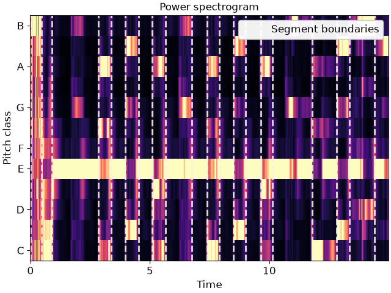

librosa.segment.agglomerative
- librosa.segment.agglomerative(data, k, *, clusterer=None, axis=-1)[source]
Bottom-up temporal segmentation.
Use a temporally-constrained agglomerative clustering routine to partition
dataintokcontiguous segments.- Parameters:
- datanp.ndarray
data to cluster
- kint > 0 [scalar]
number of segments to produce
- clusterersklearn.cluster.AgglomerativeClustering, optional
An optional AgglomerativeClustering object. If None, a constrained Ward object is instantiated.
- axisint
axis along which to cluster. By default, the last axis (-1) is chosen.
- Returns:
- boundariesnp.ndarray [shape=(k,)]
left-boundaries (frame numbers) of detected segments. This will always include 0 as the first left-boundary.
Examples
Cluster by chroma similarity, break into 20 segments
>>> y, sr = librosa.load(librosa.ex('nutcracker'), duration=15) >>> chroma = librosa.feature.chroma_cqt(y=y, sr=sr) >>> bounds = librosa.segment.agglomerative(chroma, 20) >>> bound_times = librosa.frames_to_time(bounds, sr=sr) >>> bound_times array([ 0. , 0.65 , 1.091, 1.927, 2.438, 2.902, 3.924, 4.783, 5.294, 5.712, 6.13 , 7.314, 8.522, 8.916, 9.66 , 10.844, 11.238, 12.028, 12.492, 14.095])
Plot the segmentation over the chromagram
>>> import matplotlib.pyplot as plt >>> import matplotlib.transforms as mpt >>> fig, ax = plt.subplots() >>> trans = mpt.blended_transform_factory( ... ax.transData, ax.transAxes) >>> librosa.display.specshow(chroma, y_axis='chroma', x_axis='time', ax=ax) >>> ax.vlines(bound_times, 0, 1, color='linen', linestyle='--', ... linewidth=2, alpha=0.9, label='Segment boundaries', ... transform=trans) >>> ax.legend() >>> ax.set(title='Power spectrogram')
